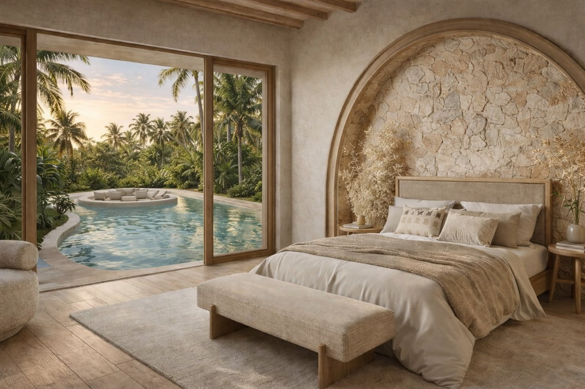
Una participacióndesde 36.800 €
- Entras junto a otros inversores en villas gestionadas por Marlaca
- Cobras la renta en proporción a tu participación
- Una entrada más asequible para conocer el producto
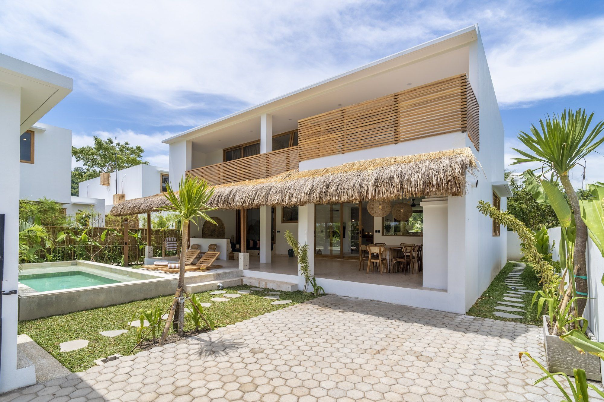
Marlaca la construye, la entrega y la opera. Tú cobras tu parte de la explotación, en euros, desde España.
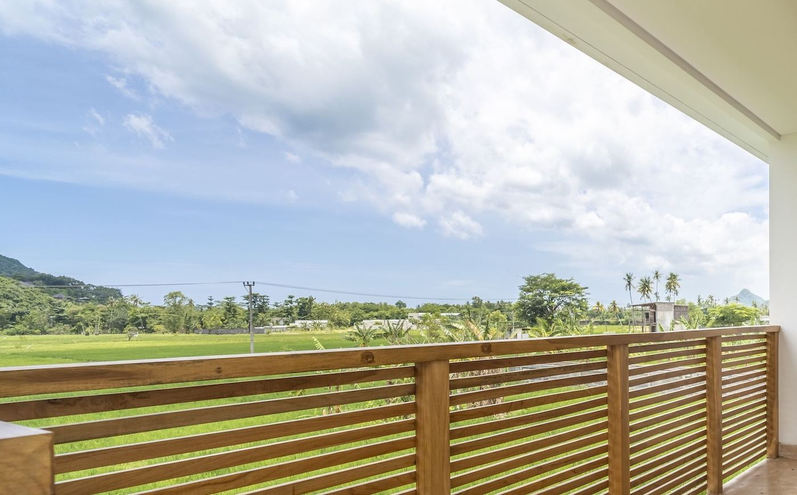
La isla de al lado, a media hora de vuelo. Aeropuerto internacional, zona económica especial y un circuito de MotoGP a quince minutos de Kuta.
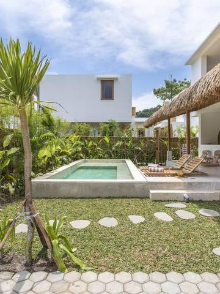
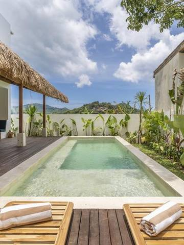
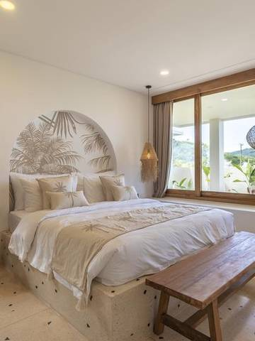
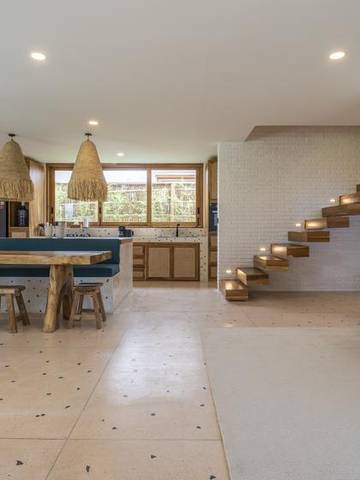
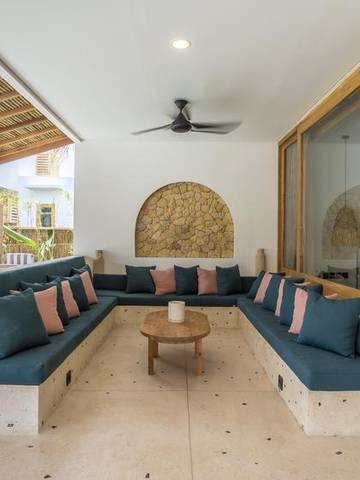
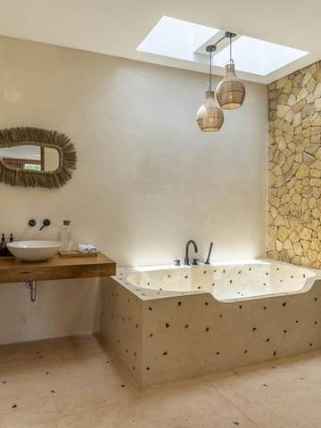
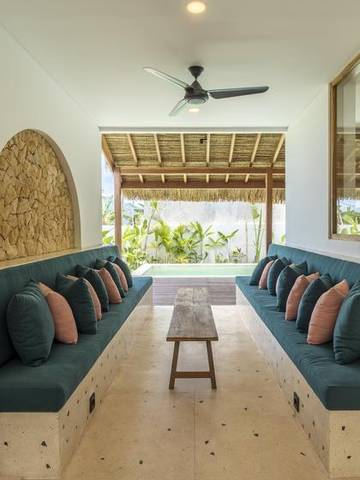
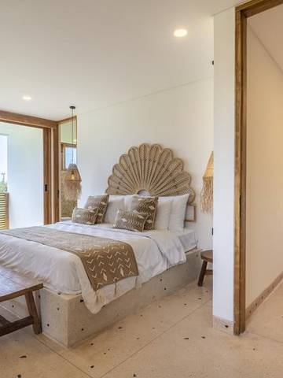
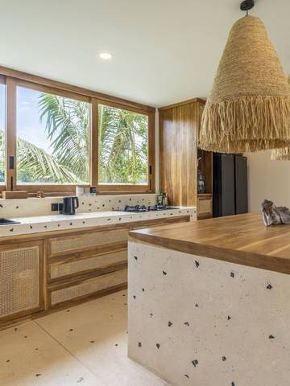
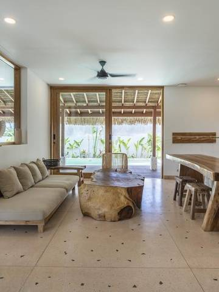
La misma operación, el mismo equipo y la misma liquidación. Una villa entera o una participación junto a otros inversores: cambia el importe, no cómo funciona.
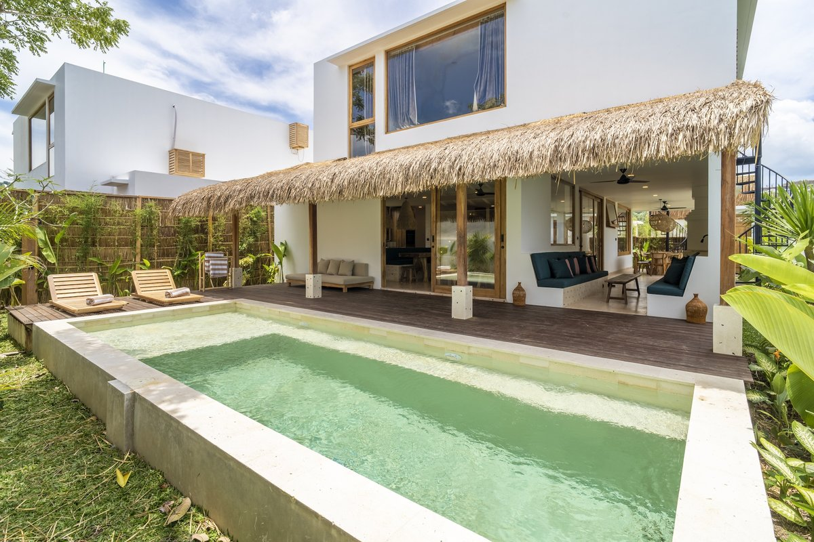
Una villa, o una parte, construida por la constructora propia de Marlaca. Antes de firmar repasamos contigo la estructura de compra y toda la documentación.
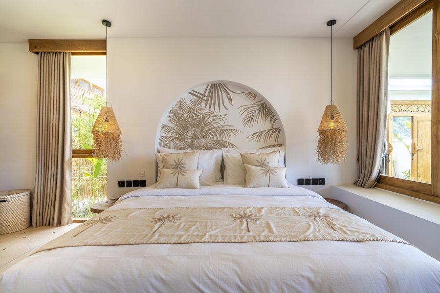
Toda la gestión resuelta: canales de venta, precios, limpieza, desayuno, mantenimiento 24 h y atención al huésped. El fee de gestión es del 20% sobre el GOP, y figura en el contrato.
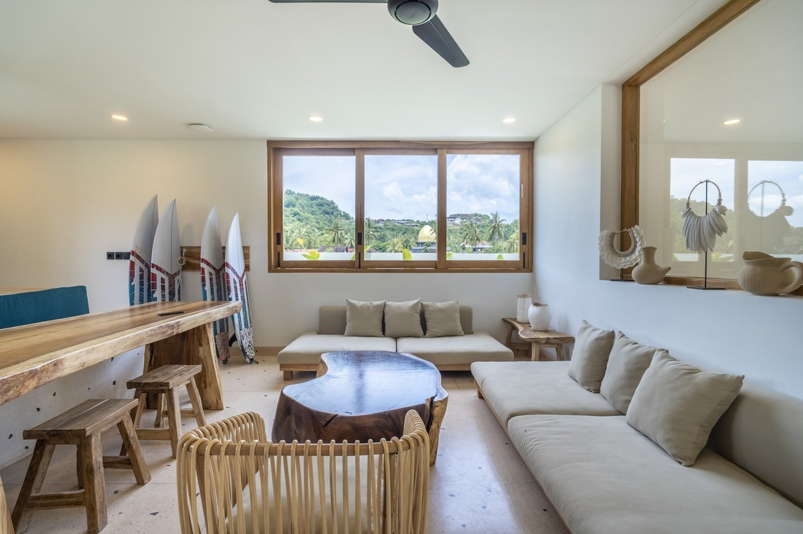
Liquidación en euros, con el detalle de la explotación. Sin huéspedes, proveedores ni incidencias que gestionar desde España.
La pregunta que hace todo inversor serio antes que cualquier otra. La estructura es esta, y está en el contrato.
Noches vendidas en Booking, Airbnb y canal directo, más los extras que consume el huésped.
Limpieza, desayuno, mantenimiento, servicios, comisiones de plataforma y el equipo en la isla.
Es el fee de gestión. Solo se cobra sobre lo que queda después de operar: si la villa no genera, Marlaca tampoco.
Con la liquidación detallada de tu villa: lo que facturó, lo que costó y lo que queda.
GOP es el resultado bruto de explotación: lo que queda de la facturación después de los costes de operar la villa, antes de impuestos y amortizaciones. El objetivo de rentabilidad que publicamos se calcula sobre esta estructura; en la llamada repasamos un ejercicio completo de una villa real, con cada descuento nombrado y sus supuestos a la vista.
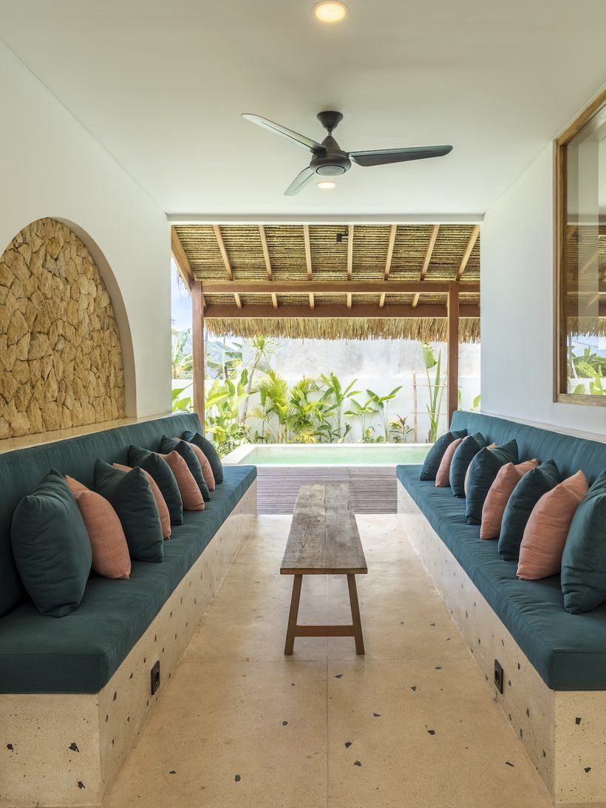
Villa Nina · ejercicio 2025 · datos del sistema de reservas. Valoraciones verificables en cada plataforma.
Una estimación al 14% anual, el objetivo de rentabilidad que publica Marlaca. No es una garantía ni una proyección de tu villa: el desglose exacto, con los ingresos y los costes reales de la unidad que elijas, se repasa en la llamada.
Renta mensual estimada, que te liquidamos nosotros
Y a partir de ahí, todo es beneficio. La villa sigue siendo tuya: la vendes o la sigues alquilando.
Reserva tu llamada y ve tu desgloseNinguno de estos números lo decimos nosotros. Son públicos, y cada uno lleva su fuente al pie.
Kuta está en el sur de Lombok, el vértice donde el Estado concentró la inversión: aeropuerto internacional, carretera nueva hasta el circuito y una costa que aún se puede caminar sin esquivar a nadie.
Todo lo que importa, a menos de media hora de la villa.
Esa es toda la tesis: misma zona, mismo mar, aeropuerto internacional propio, y una diferencia de escala que se ve en un solo número.
Los dos números no miden lo mismo: el de Bali cuenta solo extranjeros en doce meses y el de Lombok cuenta todas las visitas en diez. Sirven para ver la diferencia de escala entre una isla madura y una que todavía no lo es, no para dividir uno por el otro.
1. Dinas Pariwisata de Nusa Tenggara Barat, diciembre de 2025 · 2. The Jakarta Post,
«Mandalika MotoGP draws record crowd, $289m economic boost», octubre de 2025 · 3. BPS
Provinsi Bali, informe de turismo de diciembre de 2025, publicado en febrero de 2026 ·
4. Mandalika International Street Circuit · 5. Lion Air, junio de 2026.
Los datos describen el destino y su infraestructura. No son una proyección de resultados de
ninguna inversión ni una promesa de rentabilidad.
Marlaca no comercializa proyectos de terceros: encuentra el terreno, diseña, construye, entrega y opera. Toda la cadena en una sola mano, en la isla.
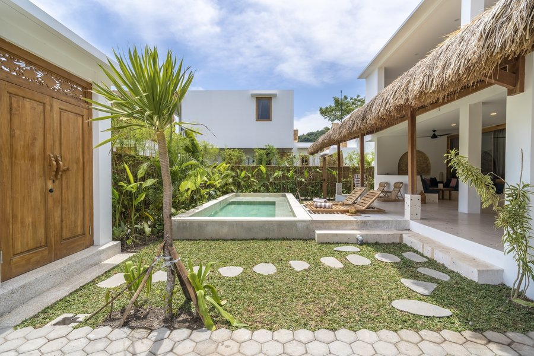
Lucía lleva once años en Lombok. Sabe dónde se alquila, dónde no, y con quién se construye.
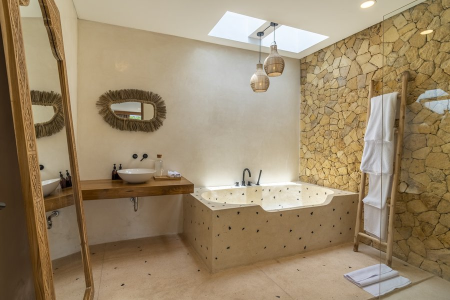
Equipo indonesio formado en Australia, con un arquitecto y constructoras aliadas con años de experiencia en la isla.
Recepción, limpieza, mantenimiento 24 h y gestión de canales. La villa trabaja todo el año.
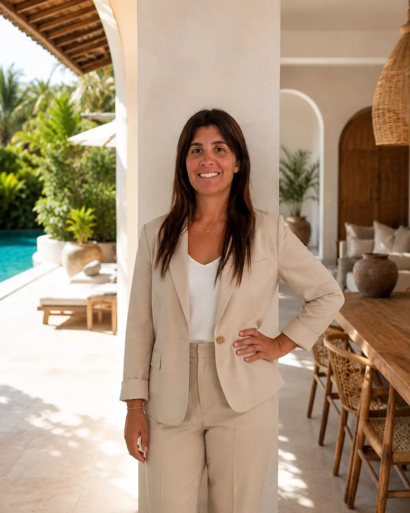
Lucía Miranda · Kuta, LombokHispanohablante, once años en Lombok y la persona con la que hablas en la llamada. Marlaca no es un fondo ni una comercializadora: es una desarrolladora con constructora propia, oficina en Kuta y 21 personas en operación.
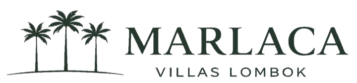
marlacarealestate.comInvertir a 12.000 km da vértigo, y con razón. Esto es lo que hay del otro lado.
Marlaca no comercializa proyectos de terceros. Encuentra el terreno, diseña, construye, entrega y opera con constructora propia y oficina en Kuta. No hay un intermediario al que reclamarle.
La estructura de compra y el contrato se repasan contigo antes de cualquier firma, y te recomendamos revisarlos con un asesor legal independiente. Si algo no te cuadra, no firmas.
El fee de gestión es el 20% del GOP, es decir de lo que queda después de operar. No es una cuota fija: si la villa no produce, Marlaca tampoco cobra. Está escrito en el contrato.
Marlaca I y II ya están entregadas y operando, Marlaca III se entrega en diciembre de 2026 y Marlaca IV en 2027. No es el primer proyecto: es el cuarto.
La prueba más honesta de que una desarrolladora cree en lo que vende no es lo que dice en una llamada: es cuánto de su propio dinero deja dentro. Marlaca no se queda solo con la gestión. Se queda con unidades.
como mínimo, en cada desarrollo. Marlaca conserva al menos una villa propia en cada etapa que construye, y la opera dentro de la misma cartera que la tuya.
Eso significa que el equipo que fija los precios, elige los canales y decide el mantenimiento está apostando su propio capital a las mismas decisiones.
No tenemos testimonios de inversores todavía. Lo que sí hay son opiniones de quienes se alojaron, publicadas en las plataformas y verificables por cualquiera.
«La villa es de ensueño, amplia, limpia, su personal atento y siempre online vía WhatsApp, te facilitan todo… es un alojamiento que RECOMIENDO».
«La habitación es espectacular y el trato del personal cercano y profesional. Dan facilidades para todo: moto, desayuno…».
«Villa fantásticamente bonita, muy grande, cómoda y limpia. Cocina estupenda, tres dormitorios amplios y dos baños. Zona exterior muy agradable, con piscina limpia. Una recomendación absoluta».
Traducida automáticamente por Tripadvisor desde su idioma original.
Opiniones publicadas por los huéspedes en Booking.com y Tripadvisor sobre las villas de Marlaca en Lombok. Reproducidas tal como aparecen en cada plataforma.
El 14% es un objetivo, no una promesa. Sale de cómo opera hoy nuestra cartera en Kuta, y en la llamada lo abrimos entero: ingresos, costes, fee y lo que queda, con sus supuestos delante. Lo que no vas a encontrar aquí es una revalorización prometida ni un número sin la cuenta que lo sostiene.
El objetivo que publicamos es del 14% anual, y la calculadora de esta página lo aplica sobre el capital que elijas. Es un objetivo basado en cómo opera hoy la cartera que gestionamos en Kuta, no una garantía. En la llamada repasamos la operación real de una villa durante un ejercicio completo, con cada descuento nombrado, para que veas de dónde sale ese número y con qué supuestos.
Te explicamos la estructura completa de la operación y la documentación antes de que firmes nada, y te recomendamos que la revises con asesoramiento legal independiente. Es el paso donde más acompañamos.
El equipo de Marlaca en la isla: 21 personas entre recepción, limpieza, mantenimiento 24 h y gestión de canales. Tú no tratas con huéspedes ni con proveedores.
Recibes una liquidación en euros con el detalle de la explotación de tu villa: lo que facturó, lo que costó operarla y lo que queda para ti.
Es un activo de horizonte largo. Hoy no existe un mercado secundario establecido en la isla, así que no es una inversión para entrar y salir en dos o tres años. Preferimos decirlo antes que después.
Alrededor de un año desde la compra. Marlaca III se entrega en diciembre de 2026 y Marlaca IV en 2027. Los plazos y las condiciones de entrega van por escrito en el contrato.
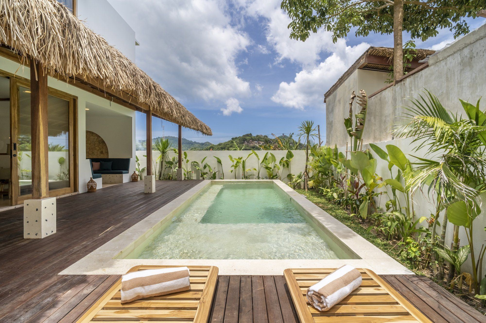
Tres preguntas de un clic y tus datos. Un minuto. Te escribimos por WhatsApp para concertar la llamada el día que mejor te venga.